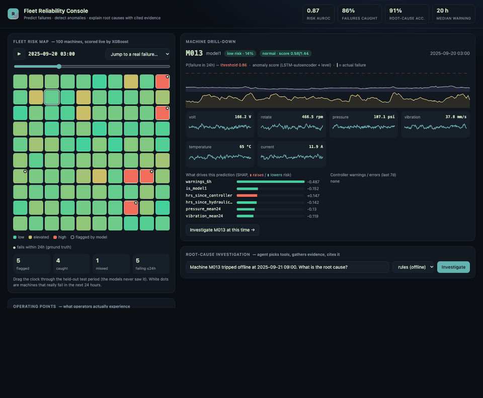

PREDICTIVE MAINTENANCE · AGENTS
Predictive Failure & Root-Cause Agent
In 30 seconds: an early-warning system for factory machines. It warns maintenance teams about a day before a machine breaks, and when one does break, an AI assistant explains the likely cause and shows its evidence.
ProblemBreakdowns are costly and the clues are spread across sensors, error logs and repair manuals.
BuiltModels that watch 100 simulated machines (XGBoost risk scoring, a PyTorch LSTM anomaly detector) plus a LangGraph agent that gathers evidence and answers with citations.
Result85% of 462 failures caught with a median 20 h of notice and 0.18 false alerts per machine per month. Agent answers are backed by evidence far more often than a plain ReAct baseline (unsupported claims 15.6% → 3.1%).
- Time-based train/test split, plus a test proving the tools cannot see future data
- Judged on operator experience (warning time, false alarms), not only AUROC
- A verifier sends unsupported claims back for revision; runs free on a local LLM
XGBoostPyTorchLangGraphFAISSFastAPIGitHub ActionsOllama

LIVE DEMODrag the clock, click a machine, replay a real failure. Simulated fleet; the test period was never seen in training.